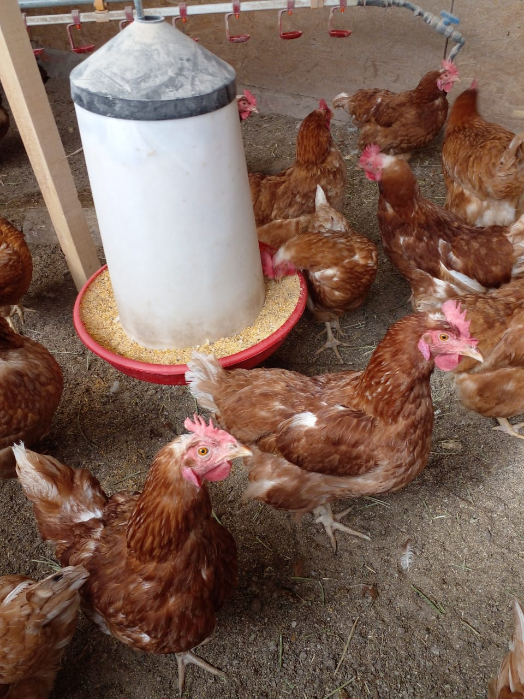
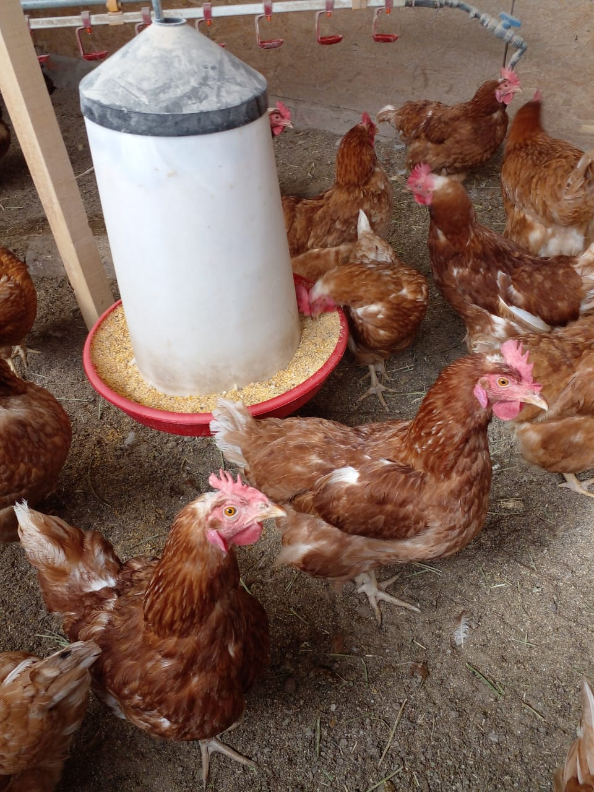
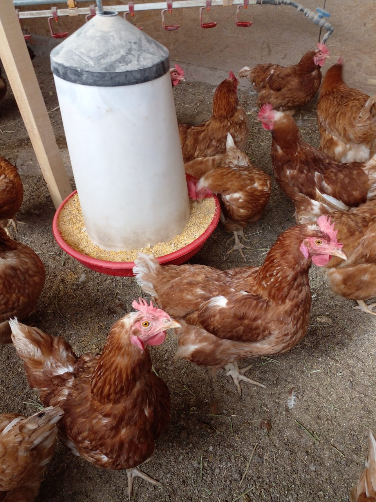

Nuestras instalaciones se encuentran en la Patagonia, General Roca, Rio Negro. Criamos gallinas felices, en gallineros cerrados con diferentes salidas, donde nuestras gallinas pueden caminar y vivir en comunidad. Este estilo de crianza se basa en la teoria de que mientras mas felices sean las gallinas mas productividad tendran y mas larga sera su vida. Esto, mas que una teoria, para nosotros es un hecho, ya que lo hemos demostrado en lo empirico. Los gallineros son extensos. Tenemos 7 gallineros donde viven aproximadamente 2000 gallinas de nuestras razas.
